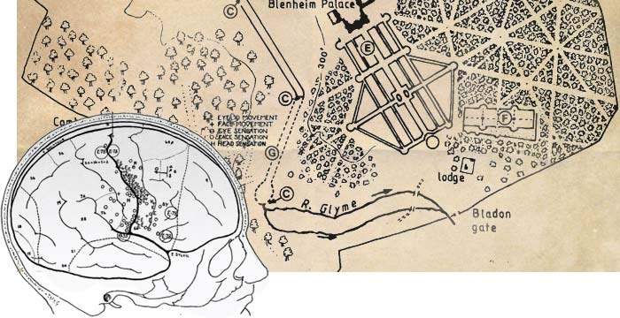

Know
Thy User
The Story
Greenwood Campbell is the digital agency that focuses on people. People don’t browse the internet, they use it to get things done, and they usually don’t have much time to do it.
When Lancelot Capability Brown would design a spectacular new garden as at Blenheim palace, he’d create stupendous things to see, undulating grassed areas, scatterings of trees and serpentine lakes, a gardenless informal new style of landscaping. Though he would wait until a dusting of snow covered it all before opening the gardens to the public, after the people had taken in the experience of the incredible vistas, he’d observe the paths they’d made in the snow. Only then would he lay paths around the garden.

This is our approach to every digital project. Until we’ve learnt exactly what you and your customers want to achieve we won’t touch a thing. We understand people, their motivations, habits and moods. We recognise that people don’t browse the internet, they use it as a tool to get things done. Using this insight we’ll help you craft personalized content using the latest technology to create the right journey for them, regardless of device, so they can book a hotel room, enquire about surgery, or get their iPad fixed.
The realm of digital and the corridors of the internet are ever-expanding as is our expertise. With each new client we apply this knowledge while learning something new, this cross-industry intelligence allows us to cater to you no matter the field of business giving you the ultimate benefits. We’re digital connoisseurs devoted to understanding how people interact online and building things that matter to people, useful things.